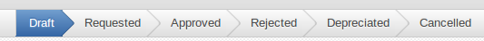

Características comunes |
  
|
Características comunes |
|
En esta sección presentaremos las características comunes de los registros.
Workflow
Presentan el siguiente flujo de trabajo:

•Draft: representan registros que están preparándose para ser presentados. En esta etapa todos los campos son editables
•Requested: son registros que ya se han presentados y que están en proceso de evaluación. Solo algunos campos serán editables en esta etapa.
•Approved: Son los registros que han sido aprovados. Muy pocos campos son editables para registros en esta etapa.
•Rejected: Registros que no fueron aprovados.
•Depreciated: Registros que han sido reemplazados o están vencidos.
•Cancelled: Registros que no han seguido adelante por algún motivo.
Categorías
Una categoría de registro es un subtipo dentro de los tipos de registros (formulado, técnico, etc).
Para una determinada categoría se definen que informaciones, documentos y procesos son necesarios. Al elegir una categoría en un registro se nos van a pre completar las siguientes secciones según la configuración de dicha categoría:
•Information's
•Studies
•Partner Documentes
•Taxes
•Dossier Documents
•Processes
Informaciones
Las informaciones son basicamente campos HTML que son utilizados en la generación de reportes de registros.
Las informaciones presentan los siguiente campos:
•Categoría
•Partner: si la información está relacionada a un determinado partner
•Producto: si la misma esta vinculada a un determinado producto
•Texto: texto de la información
Informaciones vs uso de una información en un registro
Cuando accedemos desde un registro a la pestaña informaciones, en realidad estamos visualizando otra entidad que llamamos uso de la información. En la misma, típicamente ya tendremos pre-completada la categoría necesaria.
Luego podremos elegir la información que utilizaremos para cumplir con dicho requisito o podremos registrar directamente una información en el campo texto.
Cabe destacar que el texto que va a utilizarse es el texto que figura en el uso de la información y no el texto que figura en la información asociada. Podríamos pensar a las informaciones como un template para completar textos que debemos utilizar en nuestros reportes.
Estudios y documentos del partner
En dichas secciones se anexan todos los Estudios y Documentos del Partner requeridos para el registro actual.
Dichos documentos pueden ser necesarios para la generación de algunos reportes (por ej. Dossier VI).
Se presenta un workflow para indicar si se desea o no utilizar esos documentos en el registro actual:
•Draft: Documentos que se han vinculados pero no se ha decidido utilizarlos al momento
•Approved: Documentos para los cuales se ha aprovado la utilización en el registro actual
oSerán utilizados en la generación de reportes
oPodrán ser utilizados en comunicaciones
Taxes y documentos Dossier
Son documentos que se crean relacionados a un registro.
Dichos documentos pueden ser necesarios para la generación de algunos reportes (por ej. Dossier VI). También pueden ser elegibles en la generación de comunicaciones
Procesos
Representan los distintos procesos que deben realizarse frente a distintos Organismos Gubernamentales para la obtención de un registro. Cada proceso dispone del mismo workflow que se dispone en un registro.
Comunicaciones
Se detalla en la sección Comunicaciones
Operation
Casi todos los tipos de registros ofrecen la posibilidad de indicar si el registro es:
•Nuevo
•Modificación: modifica a un registro ya obtenido o que está en tramite. Deberá indicarse a que registro está modificando, debiendo este último estar en estados draft, requested o approved.
•Replacement: reemplaza a un registro ya obtenido. Deberá indicarse cual es el registro reemplazado debiendo este último estar en estado "depreciated"
Para un determinado registro podrá ver también que registros están modificando o reemplazando al mismo, para ello deberá ir a la pestaña "Results" bajo la sección "Modified by"
Campos varios
Se presentan los siguientes campos comunes en los registros
•Operative: Empresa Operativa para la cual es el registro
•Project: Proyecto asociado del módulo de proyectos para el proyecto de obtención de dicho registro
•Legal representative: Usuario que será utilizado en diversos reportes como representante legal.
•Company: define quienes podrán tener acceso y visualizar dicho registro. Responde a la siguiente estructura:
oSer visible si el registro no está asociado a ninguna compañía o si esta asociado a nuestra compañía o alguna compañía que esté por debajo en el árbol de compañías. Puede consultar la sección Multi Compañía para más información.